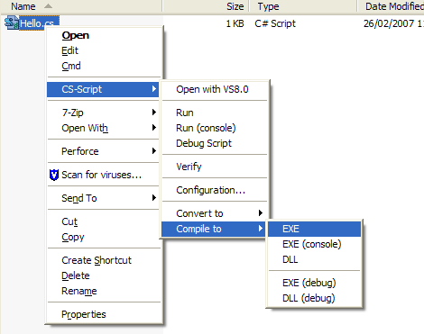
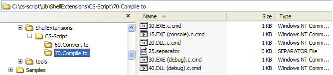

These shell extensions are implemented as simple registry entries and appear on the root level of the explorer context menu:

In addition to these simple shell extensions CS-Script (starting from v1.8.0) offers Advanced Shell Extensions. This is a set of configurable batch file based shell extensions which can be modified and extended by user according his/her needs. The Advanced Shell Extensions can be enabled/disabled form the configuration console.
By default Advanced Shell Extensions allow you to:
- Open script file in VS8.0
- Run script as a WinForm application
- Run script as a console application
- Start script under debugger
- Check script for errors (verify)
- Start configuration console
- Convert script to a VS2005 project
- Convert script to a VS2008 project
- Creates shortcut to the script file to run it by double-clicking (this is a much safer option than to modify default double-click behavior for all .cs files)
- Compile script into a WinForm application
- Compile script into a console application
- Compile script into a class library
- Compile script into a WinForm application with embedded debug information
- Compile script into a console application with embedded debug information
This is how Advanced Shell Extensions appear in windows explorer:

The major difference between simple and Advanced Shell Extensions is that advanced extensions are implemented as a COM server with dynamic behavior. This allows user to have highly structured explorer context menus by creating or modifying corresponding batch files.
User can alter shell extension without producing a single line of code. This includes:
- Change structure of menu branches
- Change menu item name
- Create new menu item
- Remove existing menu item
- Change menu item associated action
- Change menu item order
The idea behind the Advanced Shell Extensions is simple: file structure and content of batch files controls appearance and behavior of the explorer context menu. The context menu on the image above is generated on the base of the following file structure:

Thus if you want to create menu item "Open in Notepad" in the root level of CS-Script shell extension you will need to create "C:\cs-script\Lib\ShellExtensions\CS-Script\Open in Notepad.cmd" batch file containing the following text:
notepad.exe %1
To ensure the menu item position you can preface the batch file name
with two digit (##.) prefix which is not displayed at runtime. Also you
can use suffix ".c" between file name and file extension to force the
shell extension to display console window during the execution.The best way to learn how to control Advanced Shell Extensions is to analyse existing batch files.
See Also
CS-Script Settings